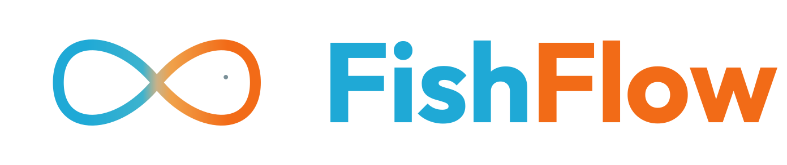

Dear Marta,
Thank you for opening the door — both metaphorically, when you replied to my cold email at 11pm on a Tuesday, and literally, when you let me sit on the corner stool of the bakery for two hours last week and watch the inquiries pile up. I came home with notes, three pastel de nata, and a clear picture of what FishFlow needs to do for you.
This letter confirms the start of your two-week pilot. From Monday, the assistant will quietly read your incoming catering inquiries and weekly orders. It will not reply, send, or schedule anything during this period. We are simply learning how you write, what you ask, and where the time goes. At the end of the calibration, I will visit Valencia in person to walk you through what we have learned and to set up the first workflow — the catering quote — together with you.
You will find the formal proposal and the first invoice attached. Both are valid through the end of May. If you need to reschedule the onboarding visit or change anything in scope, my mobile is at the top of this page; I am the only person who answers it.
I am genuinely thankful for your trust. Café Pichilingue is the kind of business FishFlow was built for, and the kind of customer that will, frankly, teach us more than we will ever teach you.